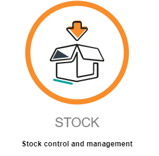
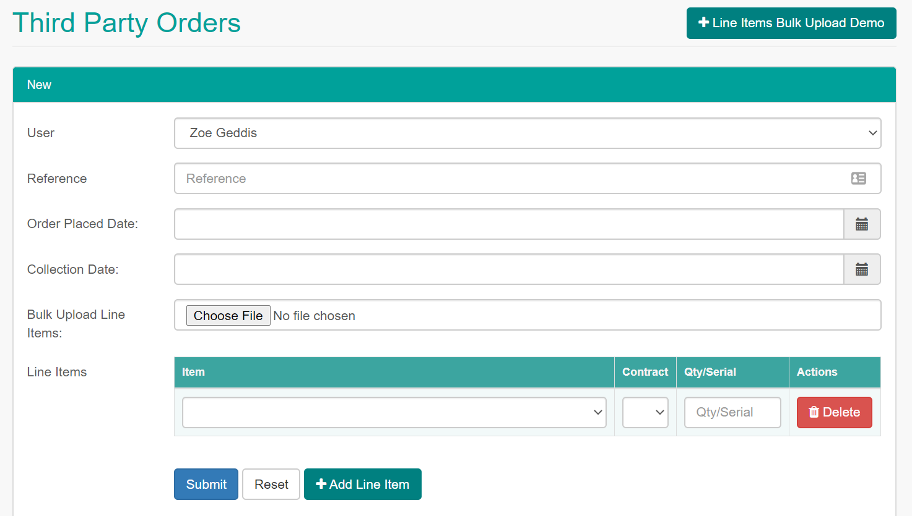
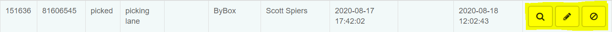

Contents:
StockIntroductionAccess MatrixReportsStock SummaryCost SummaryLow Stock CheckCustom ReportVan Stock ReportOrders & Third Party OrdersOrdersThird Party OrdersByBox ProcessCreating Third Party OrdersActions - Inspecting, Editing and Cancelling Third Party OrdersInspectingEditingCancellingTriaging ErrorsItems & Meter DetailsItemsItem CreationItem CostsActions - Inspecting, Editing, Costs and DeletionMeter DetailsStockEngineer Stock ChecksVan Stock TransferRegions, Warehouses & LocationsContainersAuditsUsers
Stock is another of Reach's modules.
It allows office staff to:

User access can be edited by admin users in Hub.
| Access Level | Description |
|---|---|
| Admin | For office staff/managers only. Allows users to create, edit and view stock items and orders. (all Stock functions). |
| Engineer | For engineers only. Allows them to make and accept orders, needed for commissioning and van stock. |
Stock Summary shows a breakdown of items by count and location.
The report has the following fields:
| Field | Description |
|---|---|
| ID | ID of the item in STOCK |
| Name | Name assigned to the item in STOCK |
| Description | Description assigned to the item in STOCK |
| ByBox Count | (not currently implemented) |
| Total Warehouse Count | Count of assets for this item held in ByBox's warehouse on our behalf |
| Van Count | Count of assets for this item dispatched to engineer vans but not installed |
| Total Count | Sum of Van Count, Total Warehouse Count and ByBox Count |
| Total Cost | Total Count * cost assigned to the item in STOCK |
This report can be downloaded from STOCK by clicking the
Download CSVbutton.
Cost Summary shows a breakdown of items used between dates.
The report has the following fields:
| Field | Description |
|---|---|
| Name | Name assigned to the item in STOCK |
| Description | Description assigned to the item in STOCK |
| Qty | Count of assets for this item installed between the specified dates |
| Total Price | Qty * cost assigned to the item in STOCK |
This report can be downloaded from STOCK by clicking the
Download CSVbutton.
You can also specify your search by Warehouse or Contract to get more specific reports.
Low Stock Check shows a breakdown of items in STOCK that have stock levels lower then the item's assigned Minimum Unit Threshold.
The report has the following fields:
| Field | Description |
|---|---|
| ID | ID of the item in STOCK |
| Name | Name assigned to the item in STOCK |
| Warehouse | Warehouse assigned to the item in STOCK |
| Warehouse Count | Count of assets for this item held in ByBox's warehouse on our behalf |
| Minimum Stock | The Minimum Unit Threshold assigned to the item in STOCK |
You can also specify your search by Contract.
Not currently in use.
Van Stock Report shows a breakdown of the count of each item assigned to every engineer, allowing a detailed insight into what each engineer has on their van.
The report has the following fields:
| Field | Description |
|---|---|
| Name | Name of engineer |
| Contract | Contract assigned to the item in STOCK, NOT the contract(s) assigned to the engineer |
| SKU | SKU assigned to the item in STOCK |
| Item | Description assigned to the item in STOCK |
| Region | Region assigned to the engineer, NOT the item. |
| Qty | Count of assets of this type on the engineer's van |
This report can be downloaded from STOCK by clicking the
Download CSVbutton.
You can specify the search by User (engineer), Item, Contract, Region and Item Type (serialised or non-serialised).
Not currently in use.
Any order that an engineer makes from TASK will appear in this section. Each order is given an ID in STOCK and a unique reference number (8-digit) which is also given to the engineer at the time of order.
The table has the following fields:
| Field | Description |
|---|---|
| # | Unique ID assigned to the third part order; used in Audit section of STOCK |
| Reference | Unique reference given to the order for use by ByBox |
| Status | Order Status, either Created, Picking or Picked |
| Location | Will always be 'picking lane' |
| Third Party | Not in use |
| Warehouse | Will always be 'ByBox' |
| User | Engineer who created the order |
| Order Date Placed | Timestamp of order creation in STOCK |
| Collection Date | Only for Archived orders, the timestamp of order collection from an engineer's ByBox |
| Modified | Timestamp of last modification to order, more detail can be seen in the Audit section of STOCK |
This report can be downloaded from STOCK by clicking the
Download CSVbutton.
You can specify your search by Undispatched or Archived orders; 8-digit reference, Status, User, Warehouse.
Clicking the All > Button allows use of Order Date Placed From, date ranges for Order Date Placed and Collection Date and Region filters.
The 'Third-Party' is ByBox, a remote company which manages the processing of incoming deliveries and dispatches orders. Each engineer has a ByBox collection point from where they can collect their orders from. At the point of collection, engineers will be prompted in TASK to accept the delivery, at which point they should check the order contains the correct serials & items before proceed
When an order is created by an engineer in TASK, it is sent via an API link to ByBox. ByBox will process the order, pick the items for the delivery (using FIFO principal) and send return payload to STOCK's server, which STOCK then processes to create the Third Party Order.
If there is an error with the creation of the order, for instance if a SKU is missing or a serial is missing from a SKU, we will be notified by server@byboc.adaptor.stock.reachwm.io of the error.
Third Party Orders can be created to simulate the order process.
Click the + New button at the top-right of the Third Party Orders page.

Third Party Orders can be done in a bulk upload using this template (alternatively you can click
+ Line Items Bulk Upload Demoto download the template).
The template has 3 fields:
| Field | Description |
|---|---|
| Contract | Contract assigned to the item in STOCK (currently either Octopus Energy Services or Calvin) |
| Item_id | Unique ID assigned to the item in STOCK |
| Quantity_Serial | If the item is serialised then provide the item serial, otherwise if the item is unserialised in STOCK, put the quantity |
It is recommended to use the bulk template for large amounts of serials, but for 1 or 2 items it is unnecessary, instead you can click the + Add Line Item button to simulate rows in the template.
The other options that are needed for the order to process are:
| Field | Description |
|---|---|
| User | Engineer the order should be assigned to |
| Reference | Arbitrary reference for the order, can be viewed in the Audit section of STOCK |
| Order Placed Date | Date the order was 'created' |
| Collection Date | Date the order was 'collected', usually these two dates will be the same |
Once all fields are set, click Submit to create the order. The order will now appear on the main page of the Third Party Orders section as undispatched.
If an engineer's order had an error and has been manually created this way, if the resync TASK it should now prompt them for collection. Otherwise, another way to complete the order is to dispatch it manually (see below).
At the far-right of each order are 3 buttons, Inspect, Edit and Cancel, respectively.

Inspecting lets you see additional details about the order, namely the Region, Container, and a breakdown of items in the order and the quantity ordered.
There are 2 actions that can be taken, Print and Dispatch. Print allows you to save a printable .pdf of the order showing the order details, while Dispatch allows you to manually dispatch the order to the engineer. This simulates an engineer collecting their order and will transition the status of all assets in the container from in picking lane to dispatched and in installer van. At this point these assets can then be installed.
Clicking on the container ID takes you to a more detailed breakdown of its stock, where each record is an individual asset.
All aspects of a Third Party Order can be edited, even after it has been archived.
Uses for editing before the order is dispatched include:
It is not recommended/needed to edit an order after it has been archived.
In the rare case an order needs to be deleted, cancelling the order will stop all processing and remove the order from the Third Party Orders section.
Any assets contained in the order will not have their status changed!
[NEED TO DO BEFORE 1ST SEP, look at past possible scenarios]
These two sections define the types of assets we can hold in stock and the details assigned to those assets for MTDs.
This section shows a paginated list of all items that are present in STOCK.
The table has the following fields:
| Field | Description |
|---|---|
| Sequence | Sequence order the item appears in the table (lowest first) |
| Picking Sequence | Picking Sequence order the items are picked in for deliveries (lowest first) |
| Id | Unique ID assigned to the item in STOCK for backed reference |
| Name | Name assigned to the item in STOCK, this will appear to engineers when ordering stock |
| Description | Description assigned to the item in STOCK, this is usually the same as the Name |
| SKU | SKU assigned to the item in STOCK, these are used as references in orders |
| Third Party SKU | SKU assigned to the corresponding item with ByBox, these are always the same as the SKU |
| Current Unit Cost | Cost assigned to the item in STOCK |
| Contract | Contract assigned to the item in STOCK |
| Item Type | Either serialised or non serialised |
| Supplier | not in use |
The table can be filtered by Name, SKU, Item Type, Item Class and clicking
Allallows you to filter by Supplier, Third Party Sku, Category and Contract
To create a new item in STOCK